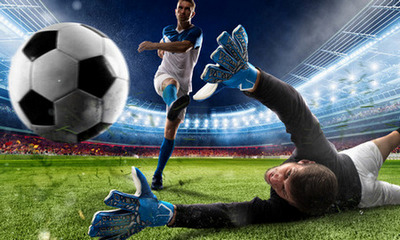

| Привет участникам соревнований! | |
ФУТБОЛФутбол (от англ. foot — ступня, ball — мяч) — самый популярный командный вид спорта в мире, целью в котором является забить мяч в ворота соперника большее число раз, чем это сделает команда соперника в установленное время. Мяч в ворота можно забивать ногами или любыми другими частями тела (кроме рук) Точной даты возникновения футбола не известно, но можно с уверенностью сказать, что история футбола насчитывает не одно столетие и затронула немало стран. Игры с мячом были популярны на всех континентах, об этом говорят повсеместные находки археологов. В Древнем Китае существовала игра, известная как «Цуцзюй», упоминания о которой были датированы вторым веком до нашей эры. По заявлению ФИФА в 2004 году, именно она считается наиболее древней из предшественников современного футбола. В Японии подобная игра носила название «Кемари» (в некоторых источниках «Кенатт»). Первое упоминание о Кемари встречается в 644 году нашей эры. В Кэмари играют и в наше время в синтоистских святилищах во время фестивалей. В Австралии мячи делали из шкур крыс, мочевых пузырей крупных животных, из скрученных волос. К сожалению, правил игры не сохранилось. В Северной Америке тоже был предок футбола, игра называлась «pasuckuakohowog», что означает «они собрались, чтобы поиграть в мяч ногами». Обычно игры проходили на пляжах, мяч пытались забить в ворота шириной около полумили, само же поле было в два раз длиннее. Число участников игры доходило до 1000 человек. Футбольный матч состоит из двух таймов длительностью по 45 минут каждый. Между таймами предусмотрен 15 минутный перерыв на отдых, после которого команды меняются воротами. Это делается для того, чтобы команды были в равных условиях. Футбольную игру выигрывает команда, забившая большее количество голов в ворота соперника. Если команды закончили матч с одинаковым счетом голов, то фиксируется ничья, или назначаются два дополнительных тайма по 15 минут. Если дополнительное время закончилось ничьей, то назначается серия послематчевых пенальти. Одиннадцатиметровый удар или пенальти является самым серьезным наказанием в футболе и выполняется с соответствующей отметки. При выполнении 11-метрового удара в воротах обязательно должен стоять вратарь. Пробитие послематчевых пенальти в футболе проходит по следующим правилам: команды проводят по 5 ударов по воротам соперника с расстояния 11 метров, все удары должны проводиться разными игроками. Если после 5 ударов счет по пенальти равный, то команды продолжают пробивать по одной паре пенальти, пока не будет выявлен победитель. |
|
| Главное не победа, а участие! | |